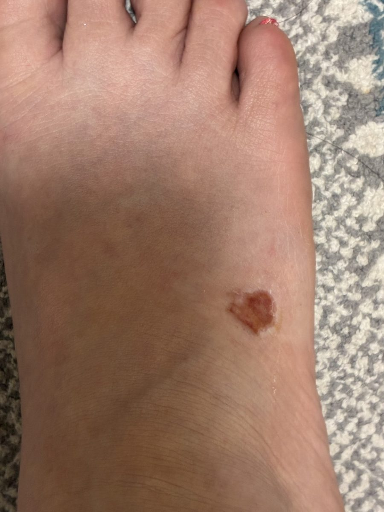
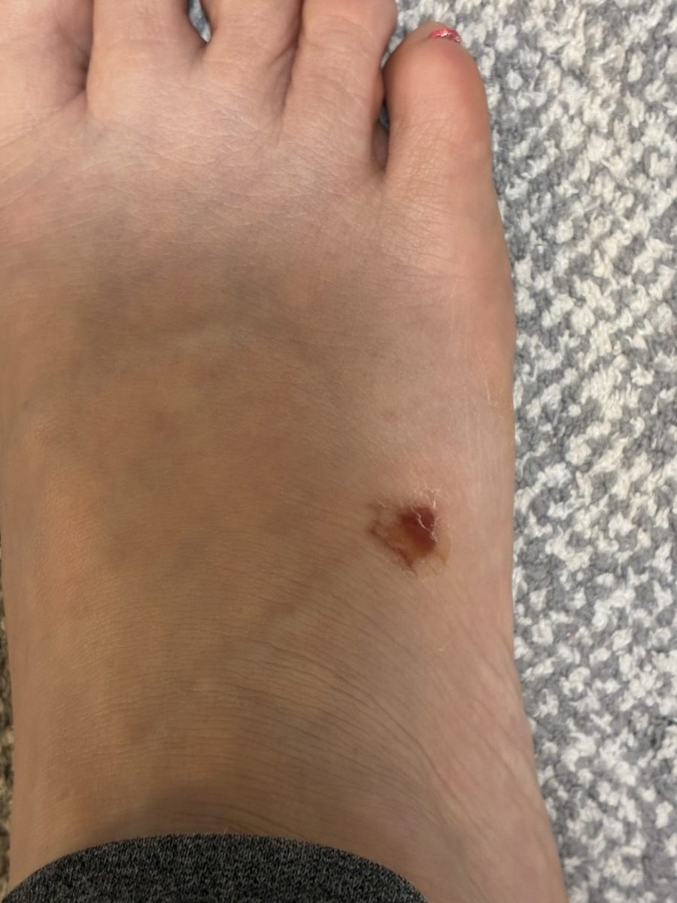
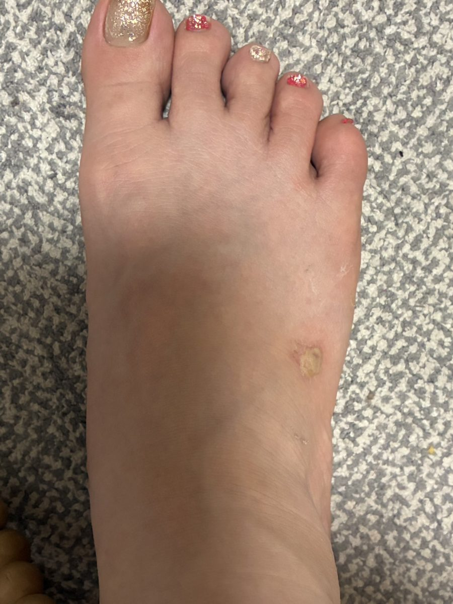
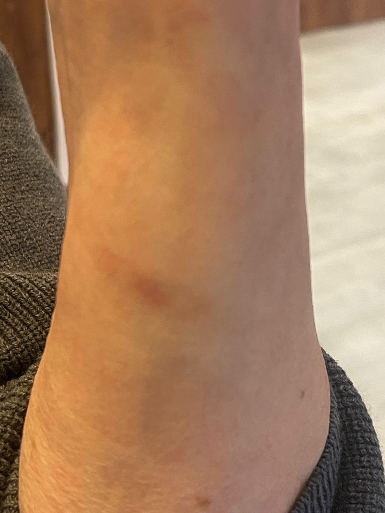
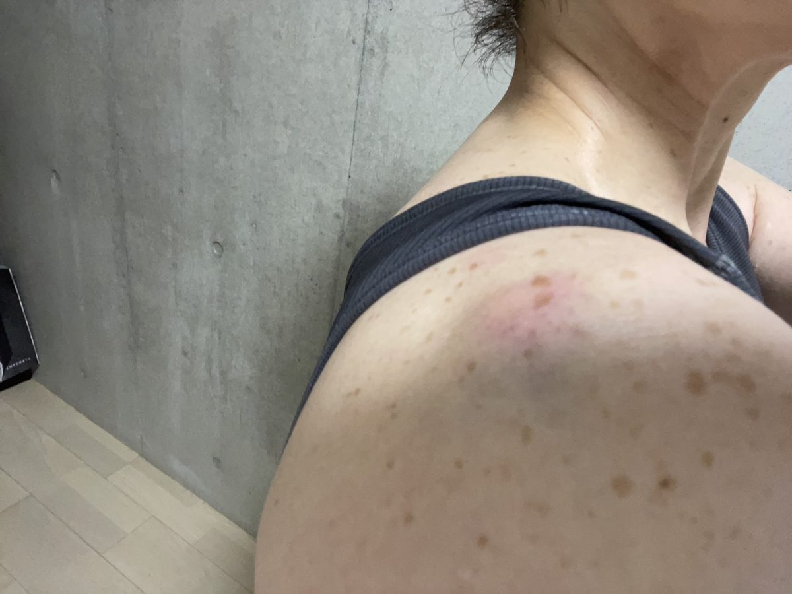
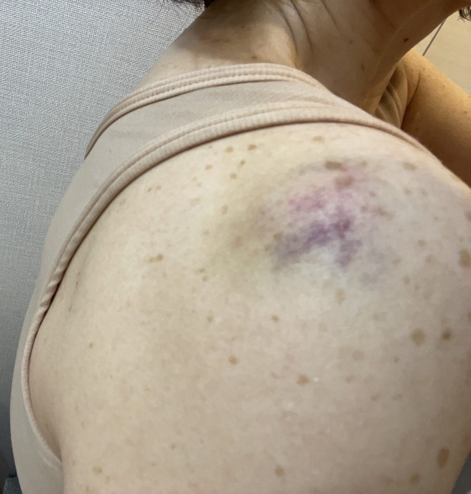
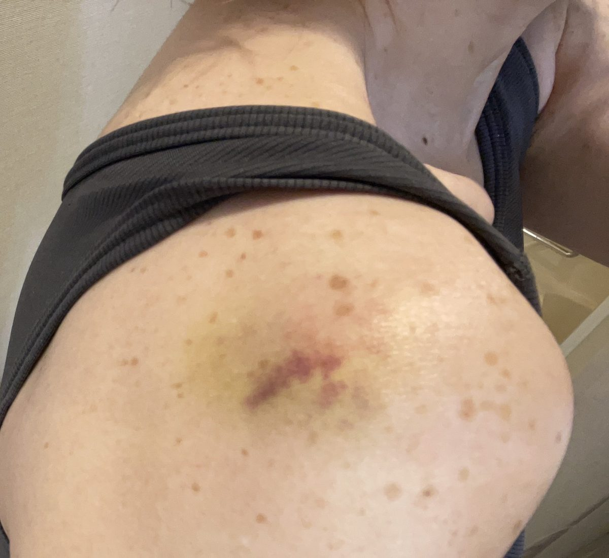
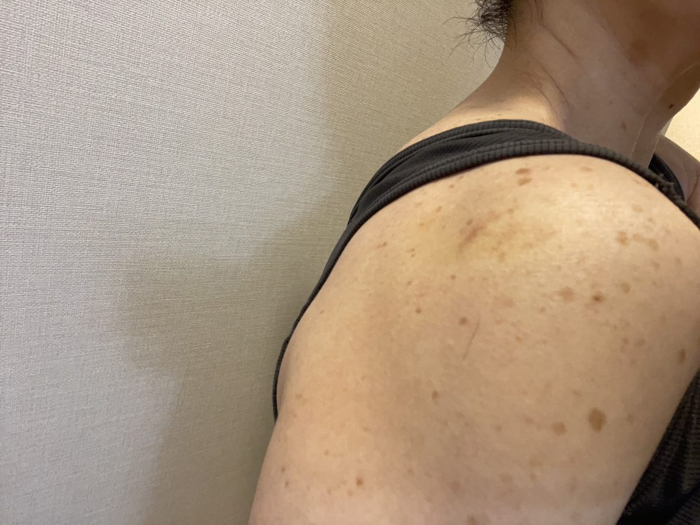
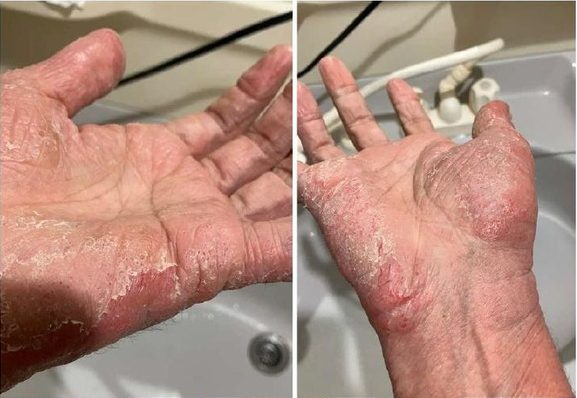
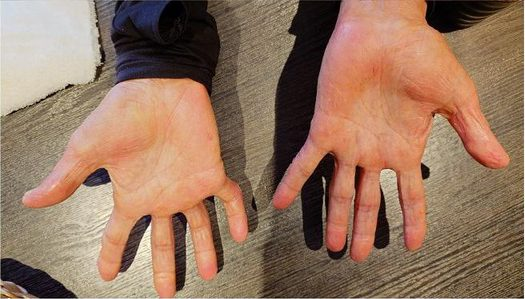

01
足の皮むけ
足の皮膚がめくれた部位を、使用前・1日目・2日目に撮影した写真です。



※資料に記録された個人の使用事例です。傷の治療・治癒効果を示すものではありません。傷がある場合は医療機関へご相談ください。
ご本人が使用の経過を記録した写真です。いつ撮影した写真かをあわせて掲載しています。
掲載している写真は、ご本人が使用の経過を記録したものです。治療効果を示すものではありません。皮膚に気になる症状がある場合は、医療機関へご相談ください。
毎日のお肌のお手入れでの使い方は、皮膚ケアのページでご紹介しています。
足の皮膚がめくれた部位を、使用前・1日目・2日目に撮影した写真です。



※資料に記録された個人の使用事例です。傷の治療・治癒効果を示すものではありません。傷がある場合は医療機関へご相談ください。
水膨れのヤケドがあった腕を、使用後に撮影した写真です(ご本人によるアフター写真)。

※資料に記録された個人の使用事例です。火傷の治療・改善効果を示すものではありません。火傷は医療機関へご相談ください。
医療脱毛後の肩の肌を、当日・1日後・3日後・1週間後に撮影した写真です。




※資料に記録された個人の使用事例です。医療脱毛後の火傷や皮膚症状に対する治療効果を示すものではありません。
3日後・2週間後・1ヶ月後・現在の経過を記録した写真です。
掲載の準備ができ次第、公開します。
※資料に記録された個人の使用事例です。アレルギー・炎症の治療や改善を保証するものではありません。
使用前と3日後を記録した写真です。
掲載の準備ができ次第、公開します。
※乳幼児を含む肌への安全性や治療効果を示すものではありません。皮膚症状がある場合は医療機関へご相談ください。
手のひらを、使用前と4ヶ月後に撮影した写真です(記録期間:5月24日〜9月23日)。


※資料に記録された個人の使用事例です。アトピー性皮膚炎の治療・改善効果を示すものではありません。症状については医師へご相談ください。